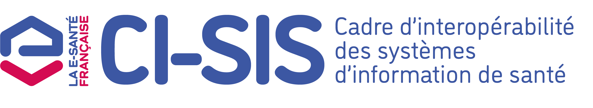

Portabilité des Données LGC
0.1.0 - draft

Portabilité des Données LGC
0.1.0 - draft

Portabilité des Données LGC - version de développement local (intégration continue v0.1.0) construite par les outils de publication FHIR (HL7® FHIR® Standard). Voir le répertoire des versions publiées
| URL officielle: https://interop.esante.gouv.fr/ig/fhir/pdlgc/ImplementationGuide/ans.fhir.fr.pdlgc | Version: 0.1.0 | ||||
| Draft à partir de 2026-08-12 | Nom computable: PDLGC | ||||
PDLGC Implementation Guide - Data portability for Practice Management Software
This guide defines the functional and technical specifications for the portability of health data between practice management software vendors, in accordance with Article L.1470-5-1 of the French Public Health Code.

La portabilité des données des logiciels de gestion de cabinet (LGC) permet de garantir qu'un changement d'éditeur de logiciel ne constitue plus un obstacle à l'exercice professionnel ni à la continuité des soins. Elle repose sur l'obligation de transfert des données de santé entre éditeurs de services numériques, telle qu'introduite par l'article L.1470-5-1 du Code de la Santé Publique (article 55 de la loi n° 2026-403 du 26 mai 2026 de simplification de la vie économique).
Le présent guide d'implémentation traduit en spécifications fonctionnelles et techniques les exigences du Référentiel de sécurité, d'interopérabilité et d'éthique relatif à la portabilité des données des LGC élaboré par l'ANS et approuvé par arrêté du ministre chargé de la santé.
Le contexte métier, défini sur la présente page, présente les cas d'usage, les définitions, le cadre juridique ainsi que l'organisation des processus collaboratifs.
Cette section présente les spécifications fonctionnelles et techniques associcées à chaque processus collaboratif.
L'étude fonctionnelle présente notamment les acteurs, une définition du processus collaboratif et une modélisation de l'archive de Portabilité.
Les spécifications techniques décrivent le flux d'export d'archive de Portabilité et son positionnement par rapport à d'autres profils, ainsi que les formats des documents échangés.
La structure de l'archive de Portabilité décrit quant à elle l'arborescence, les conventions d'écriture, et le contenu des différents fichiers de gestion de l'archive
La section Ressources de conformité liste les différents artefacts supportant les spécifications fonctionnelles et techniques
Cette section renvoie aux annexes relatives à la sécurité, aux téléchargements, et à toute autre documentation utile au présent volet
Cette section décrit 3 Scenarios et plusieurs cas d'usage (non exclusifs) d'utilisation de la Portabilité extraits du Référentiel de sécurité, d'interopérabilité et d'éthique relatif à la portabilité des données des LGC.
| Scenario | Périmètre | Exemple |
|---|---|---|
| Export massif | Intégralité de la patientèle | Changement de LGC, départ à la retraite,… |
| Export ciblé | Sous-ensemble de la patientèle | Départ d'un praticien, réquisition judiciaire ciblée,… |
| Export unitaire | Dossier d'un patient | Droit du patient, transfert à un confrère,… |
Dans ce contexte, l'intégralité de la patientèle est transférée d'un LGC émetteur vers un LGC destinataire.
Cas d'usage 1.1 - changement de LGC : Un médecin généraliste exerçant en cabinet libéral décide de changer de logiciel de gestion de cabinet. Son contrat avec l'éditeur émetteur prend fin et il souhaite migrer l'intégralité de sa patientèle vers le nouveau logiciel.
Cas d'usage 1.2 - départ à la retraite : Un médecin part à la retraite. Il doit transmettre les dossiers de ses patients à un confrère repreneur qui n'utilise pas le même LGC.
Cas d'usage 1.3 - Fusion ou réorganisation de structures : deux structures de soins, utilisant deux LGC différents, fusionnent ou mutualisent leur activité. L'ensemble des données des patients doit être gérée dans un unique système d'information.
Cas d'usage 1.4 - Export d'archivage : un professionnel ou une structure cesse l'utilisation d'un LGC sans migration immédiate vers un autre logiciel. Les données sont exportées afin d'assurer leur conservation et leur disponibilité pour répondre aux obligations réglementaires ou aux besoins ultérieurs de continuité des soins.
Dans ce contexte, une sélection de la patientièle est transférée d'un LGC émetteur vers un LGC destinataire. La sélection peut correspondre à un filtre par professionnel de santé ou par période.
Cas d'usage 2.1 - Scission d'une structure collective : Un praticien quitte une maison de santé pluriprofessionnelle (MSP) pour s'installer en cabinet individuel. Il souhaite récupérer les dossiers de ses patients.
Cas d'usage 2.2 - Cessation d'activité d'une structure : un centre de santé ou un cabinet de groupe cesse son activité. Les dossiers des patients doivent être transférés vers plusieurs professionnels ou structures assurant la continuité des soins.
Cas d'usage 2.3 - Réorganisation interne d'une structure : une structure répartit son activité entre plusieurs sites ou plusieurs équipes médicales. Une partie des dossiers doit être transférée vers un autre LGC.
Cas d'usage 2.4 - Réquisition judiciaire ciblée : dans le cadre d'une procédure judiciaire ou d'une expertise, une autorité compétente demande la communication d'un ensemble déterminé de dossiers répondant à des critères précis (patients, période, activité, etc.). Le professionnel de santé doit pouvoir réaliser un export sélectif des données concernées, dans le respect des exigences de sécurité, de traçabilité et de confidentialité.
Dans ce contexte, seul un dossier patient est transféré d'un LGC émetteur vers un LGC destinataire.
Cas d'usage 3.1 - Exercice du droit du patient : un patient demande la communication ou la portabilité de son dossier médical. Le professionnel de santé doit être en mesure de produire un export individuel des données le concernant dans un format exploitable et lisible.
Cas d'usage 3.2 - Transfert à un confrère : un patient change de médecin traitant ou est orienté vers un autre professionnel de santé. Le dossier patient est transmis afin d'assurer la continuité des soins.
Cas d'usage 3.3 - Demande d'un ayant droit ou d'un représentant légal : lorsqu'un ayant droit, un tuteur ou un représentant légal exerce les droits prévus par les dispositions légales applicables, le dossier du patient concerné peut faire l'objet d'un export unitaire.
Cas d'usage 3.4 - Réquisition judiciaire : dans le cadre d'une procédure judiciaire, une autorité habilitée ou un expert désigné demande la transmission du dossier médical d'un patient. Le professionnel de santé doit pouvoir réaliser un export des données concernées, dans le respect des exigences de sécurité, de traçabilité et de confidentialité.
Le cadre réglementaire applicable à la portabilité des données LGC est détaillé dans le Référentiel de sécurité, d'interopérabilité et d'éthique relatif à la portabilité des données des LGC. Le présent guide d'implémentation ne reprend pas ces éléments et renvoie au référentiel pour toute question relative aux obligations légales et aux responsabilités des acteurs.
Périmètre pivot : Ensemble minimal, obligatoire et structuré de données de santé (administratives et médicales) dont le médecin est responsable de traitement et dont le transfert est encadré par le Référentiel de sécurité, d'interopérabilité et d'éthique relatif à la portabilité des données des LGC et les textes d’application de l’article L.1470-5-1 du code de la santé publique.
Format opposable : format imposé pour certaines données du périmètre pivot à la date d’entrée en vigueur
Donnée Structurée : Donnée codifiée et organisée selon une syntaxe et une sémantique normalisées, garantissant une interprétation identique par l'émetteur et le récepteur.
Données négatives et données non renseignées : Une donnée négative est une donnée saisie explicitement pour attester de l'absence d'un élément clinique (ex. : absence confirmée d'allergie). Elle se distingue d'une donnée non renseignée, qui traduit l'absence de saisie dans le logiciel, sans qu'aucune conclusion clinique ne puisse en être tirée. Cette distinction doit être préservée dans l'export et explicitée dans la documentation d'export.
Données transverses : données produites ou gérées par le LGC qui ne sont pas rattachées à un dossier patient déterminé, mais qui sont associées à l'activité du professionnel de santé, du cabinet ou de la structure de soins. Elles contribuent au fonctionnement et à l'organisation de l'activité sans constituer des données médicales propres à un patient. Les données transverses peuvent être incluses ou exclues du périmètre d'export selon le contexte d'usage, conformément aux règles définies par le Référentiel de sécurité, d'interopérabilité et d'éthique relatif à la portabilité des données des LGC.
Le domaine "Export de données de santé" comprend les différents volets permettant un échange de données de santé s'appuyant sur le profil IHE_XDM.
Le processus collaboratif d'échanges de document de Santé via MS Santé est relatif à l'échange d'un ou plusieurs documents de santé concernant un même patient entre un système initiateur et un système cible. Les documents sont transmis sous la forme d'une archive XDM, accompagnés de leurs métadonnées, au moyen d'une messagerie sécurisée de santé (MS Santé). Ce processus fait l'objet de spécifications dédiées.
Le périmètre du présent guide d'implémentation couvre le processus collaboratif d'export d'archive de Portabilité.
Package hl7.fhir.uv.extensions.r4#5.2.0 This IG defines the global extensions - the ones defined for everyone. These extensions are always in scope wherever FHIR is being used (built Mon, Feb 10, 2025 21:45+1100+11:00) |
Package hl7.fhir.uv.extensions.r4#5.3.0 This IG defines the global extensions - the ones defined for everyone. These extensions are always in scope wherever FHIR is being used (built Sat, May 16, 2026 18:32+1000+10:00) |
Package hl7.fhir.uv.ips#1.1.0 International Patient Summary (IPS) FHIR Implementation Guide (built Tue, Nov 22, 2022 03:24+0000+00:00) |
Package ans.fr.terminologies#1.11.1 Les nomenclatures des objets de Santé sont mises à disposition du secteur santé-social par l’agence du numérique en santé (built Tue, Jul 7, 2026 20:48+0000+00:00) |
Package ans.fr.terminologies#1.1.0 Les nomenclatures des objets de Santé sont mises à disposition du secteur santé-social par l’agence du numérique en santé (built Wed, Jul 2, 2025 12:12+0000+00:00) |
Package hl7.fhir.uv.tools.r4#1.1.2 This IG defines the extensions that the tools use internally. Some of these extensions are content that are being evaluated for elevation into the main spec, and others are tooling concerns (built Tue, Mar 24, 2026 11:13+1100+11:00) |
This publication includes IP covered under the following statements.